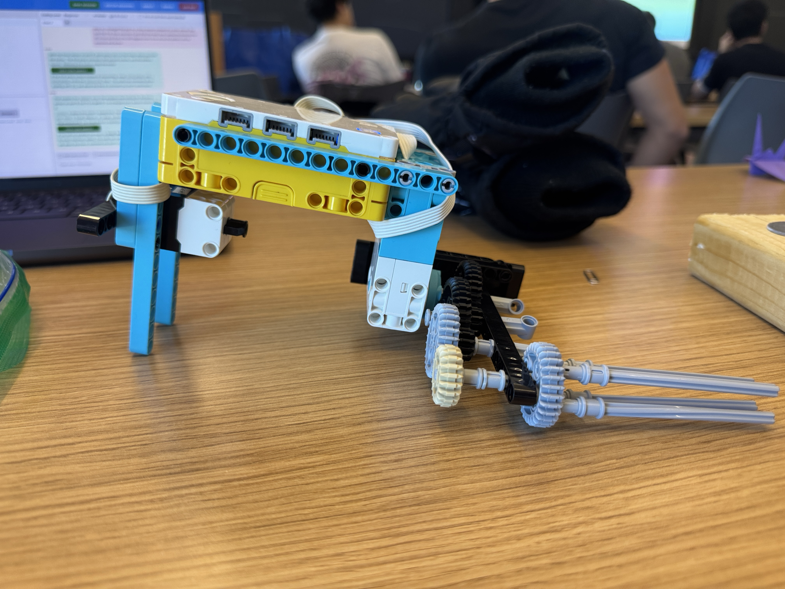

I was originally inspired to create a regular screw gun that could easily tighten and loosen lug nuts. Each press of the force sensor would switch the rotation from clockwise to counterclockwise and back.
After seeing my peers use gear ratios to make their devices spin faster, I decided to add more gears. At first, I struggled with using too many gears and my technical skills were not yet refined enough to build that design, so I removed one gear. Although it is a bit slower than I wanted, it still gets the job done and is a step up from my original idea.
With the glove on, I was able to attach and detach the lug nuts with ease using both my left and right hands in vertical, horizontal, and upside-down orientations. Next time, I would refine the handle and use as many gears as I can to make it wicked fast and more efficient.
# Setup: motor on port A; force sensor on port C.
from hub import port
import runloop
import motor
import force_sensor
# 660 degrees/second is the maximum speed for a Small Motor.
SPIN_SPEED = 10000
async def main():
# The first press will unscrew.
unscrew_next = True
while True:
# Wait for a press on the force sensor.
while not force_sensor.pressed(port.C):
await runloop.sleep_ms(10)
# Spin in the direction chosen for this press.
if unscrew_next:
motor.run(port.A, -SPIN_SPEED)
else:
motor.run(port.A, SPIN_SPEED)
# Keep spinning while the sensor is pressed.
while force_sensor.pressed(port.C):
await runloop.sleep_ms(10)
# Stop when released, then switch direction for the next press.
motor.stop(port.A)
unscrew_next = not unscrew_next
runloop.run(main())